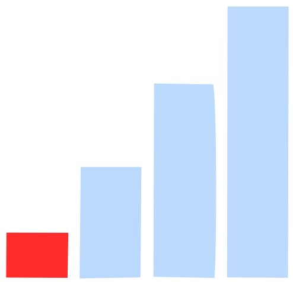
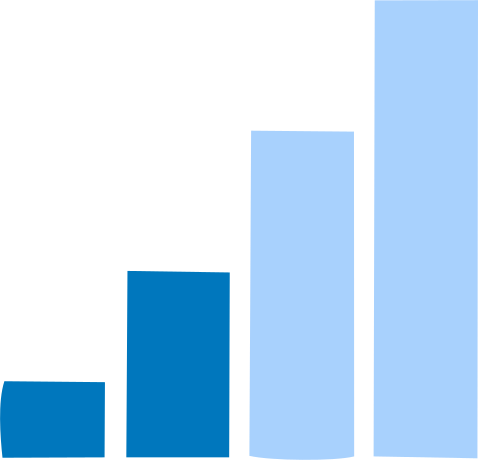

VETTI
VETTI
Configurações
Desconectar
---
---
IP: ---
MAC: ---
Partições
Partição 1
Não utilizada
Partição 2
Não utilizada
Partição 3
Não utilizada
Partição 4
Não utilizada
Partição 5
Não utilizada
Partição 6
Não utilizada
Tensão fonte
---
Tensão bateria
---
Tamper central
---
Sirene com fio
---
Painel de alarme
Data
---
Hora
---
Conexão com servidor
Servidor 1:
---
Servidor 2:
---
Ethernet:
GPRS:
WiFi:
---
---
---
Scan
Detalhado
Logger
Filtro de sensores
Filtro de sensores
Todos
Abertura
PGM
Presença interno
Presença externo
Shox
Sirene sem fio
Controle
Teclado
Transmissor
Botão pânico

Nível de Sinal Baixo

Nível de Sinal Médio
Nível de Sinal Alto
Tamper Violado
Bateria Baixa
Ausente
Inibido
Aberto
Informativo
---